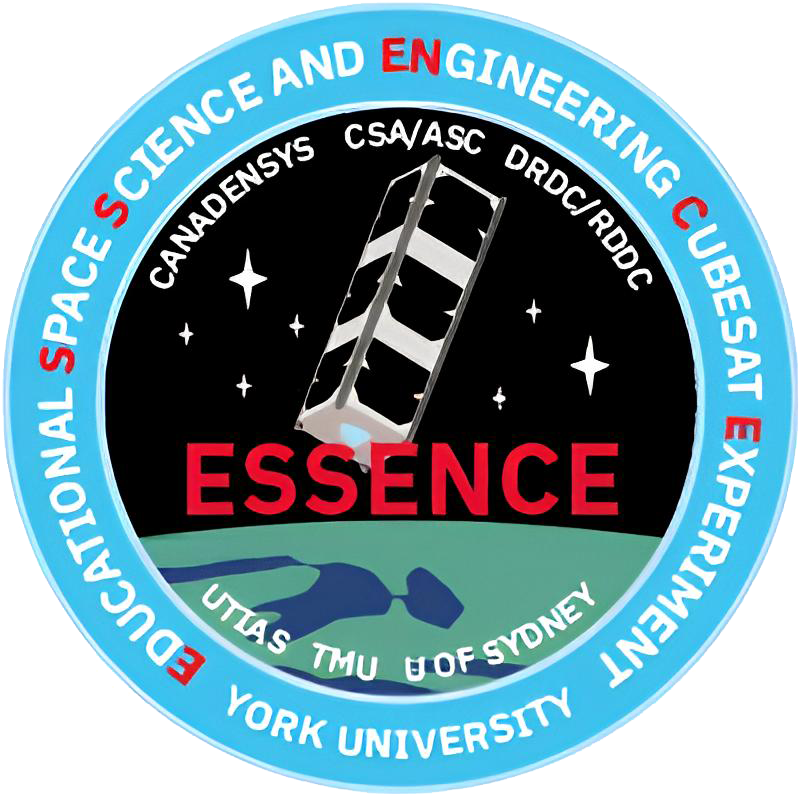
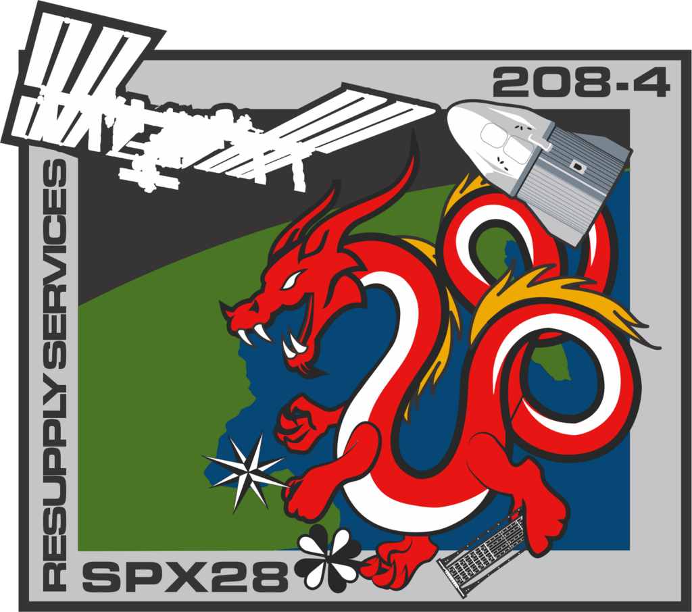
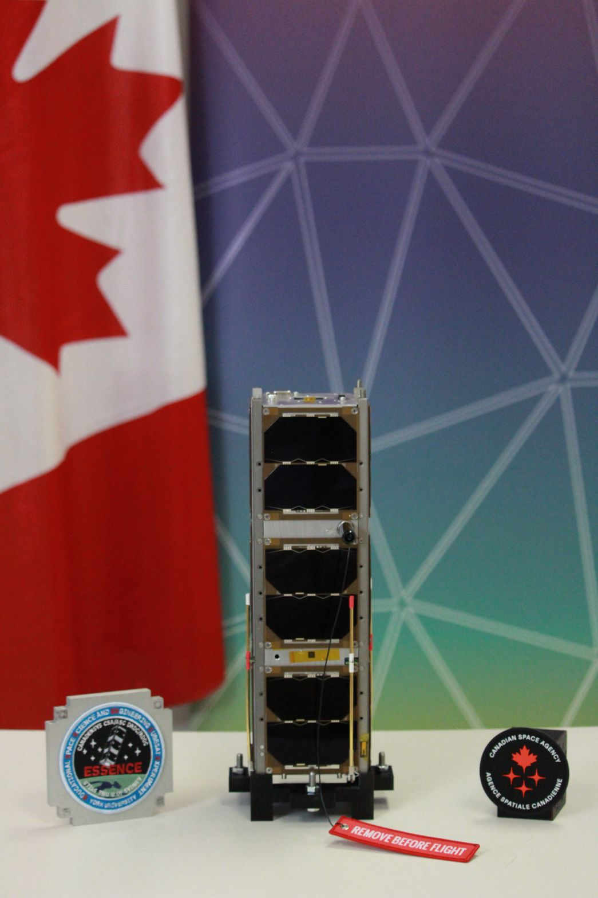
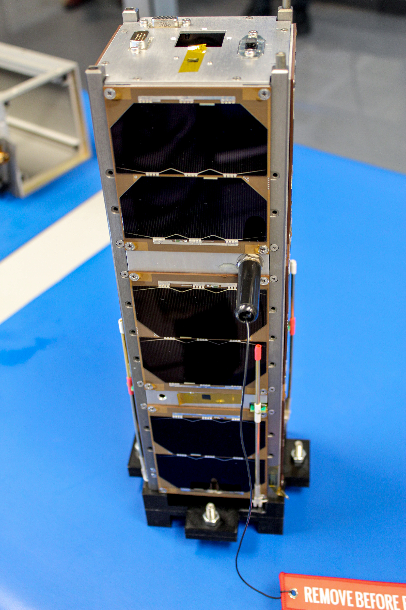
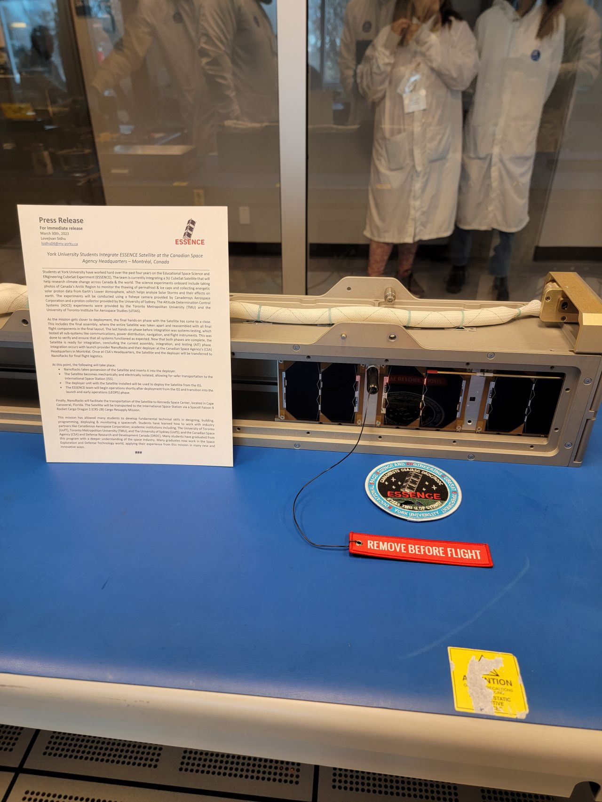
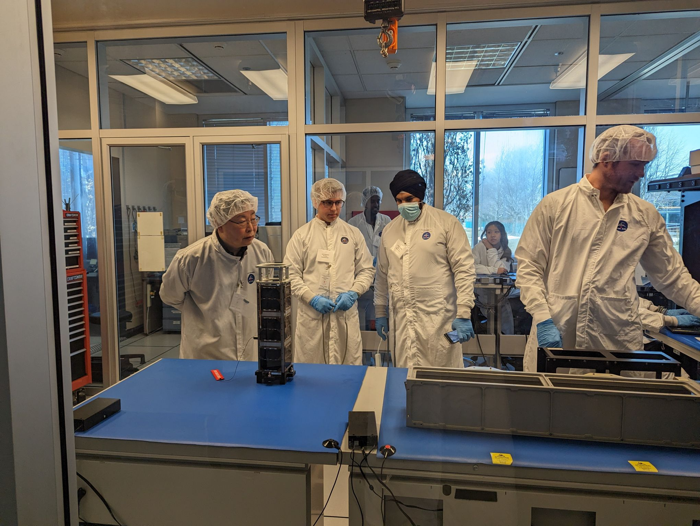
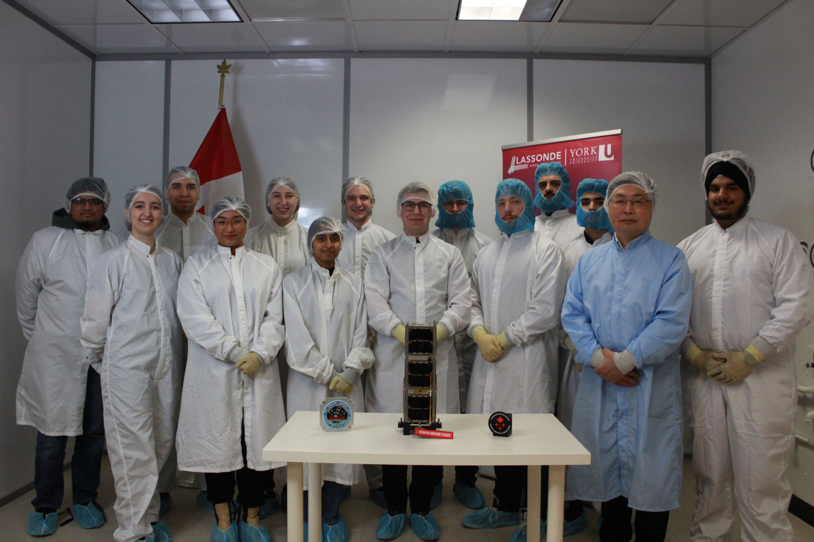
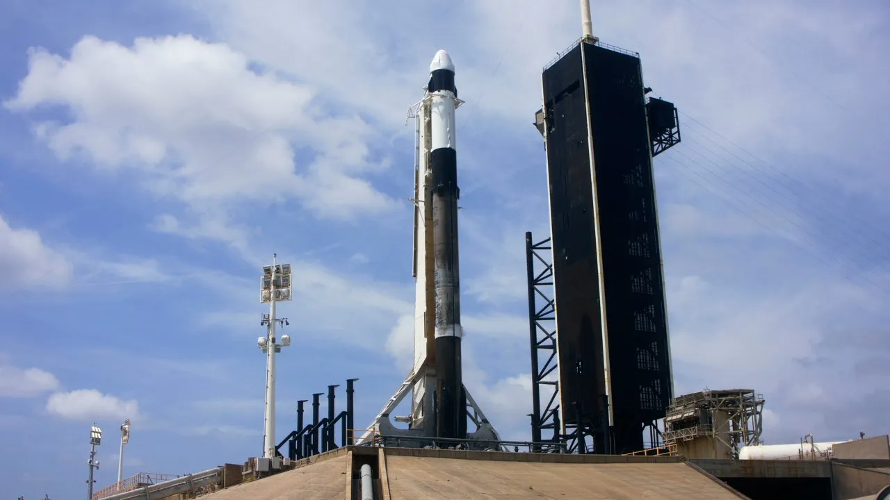

Successfully launched in June 2023, on the CRS-28 mission aboard SpaceX's Falcon 9 Rocket
A 3U CubeSat that was launched to monitor Northern Canada, using a wide angle camera, to better understand SPE's using a solar energetic proton detector and more!
I was honored to be part of the Mechanic Subsystems Team, where I played a major role in development and verification of various aspects of the 3U CubeSat. I conducted thermal analysis using Solidworks, ensured integration of the different parts of the CubeSat, redesigned parts on Solidworks, and generated technical documentation for the project.
What are CubeSats?
 A CubeSat is a type of miniaturized satellite that is used for space research, Earth observation, technology demonstration, and various other purposes. The CubeSat concept was developed to provide a low-cost platform for conducting scientific experiments and technology demonstrations in space. CubeSats are typically constructed in the form of a small cube, usually measuring 10 centimeters on each side (1U CubeSat), although larger variants such as 2U, 3U, 6U and 10U CubeSats are also common. These standardized sizes make CubeSats relatively easy to design, build, and deploy.
A CubeSat is a type of miniaturized satellite that is used for space research, Earth observation, technology demonstration, and various other purposes. The CubeSat concept was developed to provide a low-cost platform for conducting scientific experiments and technology demonstrations in space. CubeSats are typically constructed in the form of a small cube, usually measuring 10 centimeters on each side (1U CubeSat), although larger variants such as 2U, 3U, 6U and 10U CubeSats are also common. These standardized sizes make CubeSats relatively easy to design, build, and deploy.
Despite their compact size, CubeSats can carry a wide range of scientific instruments, sensors, cameras, and communication systems, enabling them to perform various tasks such as Earth observation, climate monitoring, space weather research, technology demonstration, and educational outreach. CubeSats have democratized access to space, allowing researchers, students, and entrepreneurs to pursue innovative space projects and contribute to advancements in space exploration and scientific discovery.
About the ESSENCE CubeSat
In 2019, work began on developing a CubeSat at York University that would accomplish research on climate change, solar protons, attitude control, and satellite control. Thus, Educational Space Science and ENgineering CubeSat Experiment Mission (ESSENCE) was born. Officially Nanoracks-ESSENCE, this mission set out to achieve the following goals:
- Observe arctic ice, permafrost thaw, forests, and the Arctic region of Northern Canada using a fisheye camera.
- Measure energetic solar protons to better understand the impacts of solar storms on the Earth.
- Test a novel satellite attitude control theory to recover a satellite that has partially lost attitude control ability.
- Test a satellite attitude control algorithm using the "hybrid linear quadratic regulator problem," which combines magnetorquers with reaction wheels to detumble a satellite and provide greater control of the spacecraft.
I was honored to see that part of my contributions in the Mechanical Subsystems team led to the successful launch and operation of the satellite. The ESSENCE CubeSat Project tested my current abilities and challenged me to learn new ones. I made sure integrations of various other subsystems were sound, and if there were any integration problems, that I would work to redesign the parts to ensure the problems would be solved. I also conducted rigorous thermal analysis on the CubeSat and its parts to ensure it would survive the harsh space environment, and that all internal parts would survive when under operation. Finally, I generated technical documents, and updated the various stakeholders in the project regularly to keep them up to date with our progress in the Mechanical Subsystem. I also learned how to coordinate with multiple organizations and groups, which I thought was one of the most important lessons to take away from this project.
It was also unfortunate that I could not be there in person to witness the testing phase, due to COVID-19 and other personal issues I was facing at that time, but I'm proud nonetheless that the satellite successfully made it to space.
More about the ESSENCE CubeSat, and the CRS-28 Launch
 The Educational Space Science and ENgineering CubeSat Experiment Mission (Nanoracks-ESSENCE) included scientific and technical research activities. The scientific tasks focused on Earth observation of arctic ice, permafrost thaw and forest coverage in Northern Canada, and the measurement of solar energetic protons. The payloads were a fisheye camera and a proton detector. They were designed to help fight climate change by improving our understanding of solar proton events to better design and protect spacecraft for a successful mission. The technical task was to examine the effectiveness and robustness of novel attitude navigation and control theory and algorithms using reaction wheels and magnetorquers. Specifically, the task was to demonstrate the attitude control of spacecraft using two reaction wheels with our algorithms by assuming the third one has failed. In case of attitude actuator failure in a fully actuated spacecraft, such control measures provide a means to recover the mission, although with possible degraded performance.
 Once the Assembly, Integration and Testing (AIT) Phase was complete, the ESSENCE CubeSat was transported to the Canadian Space Agency's (CSA) headquarters in Montreal. This was where the CubeSat would meet its CubeSat "Deployer", a tool that helps astronauts deploy the CubeSat into space. Once this was complete, both the CubeSat and deployer were transferred to Nanoracks for final flight logistics, that included inserting the CubeSat into the deployer, and electrically and mechanically isolating the CubeSat for safe transportation to Cape Canaveral, Florida, where it would eventually ride along with other CubeSats and resupply cargo to the International Space Station (ISS) aboard the Falcon 9 Rocket.
It is imperative to note just how many different organizations were involved in the launch of the CubeSat. The following agencies and organizations took part in making sure the launch was an overall success: York University, University of Toronto, Toronto Metropolitan University, University of Sydney, Ryerson University, Canadian Space Agency, Defence Research and Development Canada, NASA, Nanoracks, SpaceX, and Canadensys Aerospace Corporation. A big thanks to all of them. You can also watch the CRS-28 launch below.
Gallery





